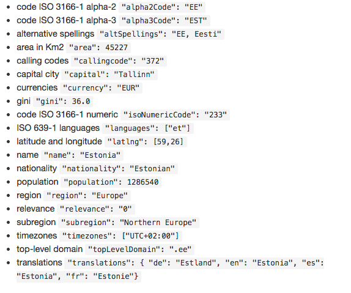
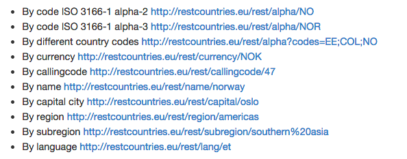

Attributes
There are some pretty cool attributes you can get from this API. Take a look at the picture below to see what's available.

You can also make calls to different API levels (fields). In the filters and selectors, I will show you how to make a call to the /name API.

Take a look at all the fields you do recieve